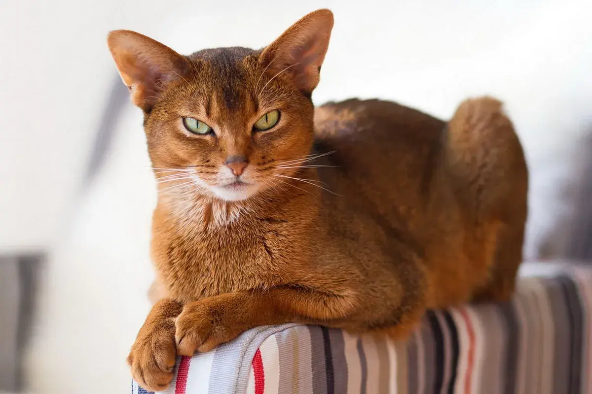
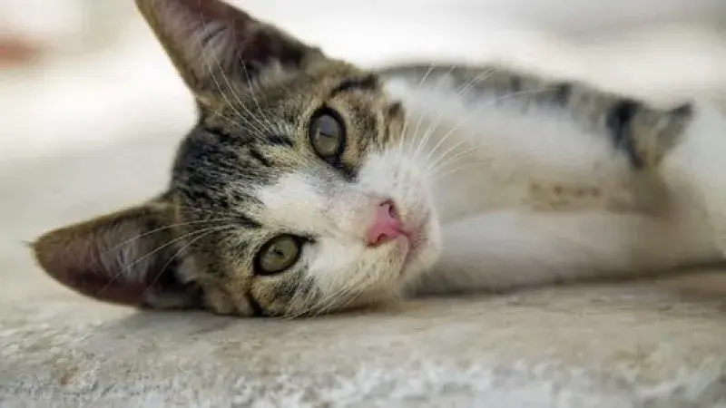

Hola, Como estas?
En esta seccion de la pagina te presentaremos algunas de las razas de Gatos, mas conocidas, ya que si englobaramos todas las razas esta seccion no terminaria nunca, asi que esperamos sea de tu agrado y te guste :).
Te presentaremos las 20 razas gatunas mas conocidas / populares.
Gato Abisinio
Esta raza de gatos es conocida por ser una de las más antiguas y originarias de Etiopía. Su pelaje corto es suave al tacto y suele tener rayas de colores marrón, beige y rojizo. Son activos y atléticos, les encanta saltar y escalar, además de ser muy curiosos y sociables.
Gato Egeo
El Gato Egeo es una raza muy antigua que se cree que se originó en Grecia. Tienen un pelaje suave y sedoso que puede ser de varios colores, como el blanco, negro y gris. Son gatos muy activos y curiosos, les encanta explorar y jugar. También son conocidos por su naturaleza independiente y su habilidad para adaptarse a diferentes entornos.
Gato Curl Americano

El Gato Curl Americano es una raza originaria de los Estados Unidos. Su rasgo distintivo es su característico rizo en las orejas. Son gatos inteligentes y amigables, a menudo se describen como perros en cuerpo de gato debido a su lealtad y disposición para seguir a sus dueños por toda la casa. Además, son muy sociables con otras mascotas y niños.
Gato Bengala

El Gato Bengala es una raza de gatos híbrida entre el gato leopardo asiático y el gato doméstico. Tienen un pelaje exótico que se parece al de un leopardo, con manchas negras y doradas en un fondo beige o blanco. Son gatos muy activos y necesitan mucho ejercicio y estímulos mentales. Además, son inteligentes y pueden ser entrenados para realizar trucos.
Gato Angora

El Gato Angora es una raza de gatos de pelo largo que se cree que se originó en Turquía. Tienen un pelaje suave y sedoso que puede ser de diferentes colores, como el blanco, negro, crema y gris. Son gatos muy inteligentes y activos, les encanta jugar y explorar. Además, son muy cariñosos y les gusta estar cerca de sus dueños.
Gato Siberiano

El Gato Siberiano es una raza de gatos originaria de Rusia. Tienen un pelaje grueso y denso que les permite sobrevivir en climas fríos. Su pelaje puede ser de diferentes colores, como el naranja, negro y blanco. Son gatos muy sociales y les gusta estar cerca de sus dueños. Además, son muy activos y necesitan mucho ejercicio.
Gato Balinés

El Gato Balinés es una raza de gatos de pelo largo originaria de los Estados Unidos. Tienen un pelaje suave y sedoso que puede ser de diferentes colores, como el marrón, azul y gris. Son gatos muy sociables y les encanta estar cerca de sus dueños. Además, son muy activos y necesitan mucho ejercicio.
Gato Exótico

Esta raza es similar al gato persa, pero con pelo corto y denso. Tiene una cabeza redondeada y ancha, con orejas pequeñas y redondeadas, y ojos grandes y redondos. Los colores de su pelaje pueden variar mucho, pero suelen ser colores sólidos o patrones de color.
Gato Color Point

También conocido como siamés moderno, esta raza es una variante del siamés tradicional. Tienen un cuerpo largo y delgado, con patas largas y delgadas, y una cabeza en forma de cuña con orejas grandes y puntiagudas. Su pelaje es corto y suave, con un cuerpo más oscuro que las extremidades, la cola y las orejas.
Gato asiático de Pelo Semilargo

Esta raza es originaria de Gran Bretaña y es una variante del gato Burmés. Tienen una cabeza redondeada y ancha, con ojos grandes y redondos, y un pelaje semilargo y suave. Son gatos de tamaño mediano con patas fuertes y musculosas.
Gato Chocolate York

Es una raza relativamente nueva originaria de Estados Unidos. Tienen un pelaje suave y sedoso de color marrón chocolate, ojos grandes y redondos, y una cabeza redondeada y ancha con orejas pequeñas y redondeadas. Son gatos de tamaño mediano con patas fuertes y musculosas.
Gato Persa Tradicional

Es una raza antigua y muy popular, con una cabeza grande y redondeada, orejas pequeñas y redondeadas, y ojos grandes y redondos. Su pelaje es largo y denso, con una amplia variedad de colores y patrones. Los persas son gatos de tamaño mediano con patas cortas y fuertes.
Gato Bicolor Oriental

También conocido como el gato bicolor de pelo corto, esta raza es una variante del gato siamés. Tienen un cuerpo delgado y musculoso, con patas largas y delgadas, una cabeza en forma de cuña con orejas grandes y puntiagudas, y ojos grandes y almendrados. Su pelaje es corto y suave, con un cuerpo blanco y extremidades de color oscuro.
Gatos Peterbald

Esta raza es originaria de Rusia y tiene un pelaje corto y suave, con una amplia variedad de colores y patrones. Tienen una cabeza en forma de cuña con orejas grandes y puntiagudas, y ojos grandes y almendrados. Son gatos de tamaño mediano con patas largas y delgadas.
Gato Azul Ruso

Es una raza antigua originaria de Rusia, con un pelaje corto y suave de color gris plateado. Tienen una cabeza en forma de cuña con orejas grandes y puntiagudas, y ojos grandes y redondos. Son gatos de tamaño mediano con patas largas y delgadas.
Gato Pelicorto Inglés

El Gato Pelicorto Inglés, también conocido como British Shorthair, es una raza de gato originaria del Reino Unido. Esta raza es conocida por su cuerpo robusto y musculoso, cabeza redonda y orejas pequeñas y redondeadas. Tienen un pelaje corto y denso en una variedad de colores, incluyendo gris, negro, blanco, crema, y más. Los gatos Pelicorto Inglés son gatos sociales y cariñosos, pero también pueden ser independientes y tranquilos.
Gatos Maine Coon

El Gato Maine Coon es una raza de gato originaria de Estados Unidos. Esta raza es conocida por su gran tamaño y su pelaje grueso y sedoso, que puede ser de diversos colores. Tienen una cabeza grande y orejas puntiagudas, y suelen tener un temperamento tranquilo y amigable. Los gatos Maine Coon son inteligentes y les encanta jugar, y son ideales para hogares con niños y otros animales.
Gato Sphynx

El Gato Sphynx es una raza de gato sin pelo originaria de Canadá. Tienen una apariencia distintiva, sin pelo y arrugas en la piel. Debido a su falta de pelaje, requieren cuidados especiales, como baños regulares y protección contra el frío y el sol. A pesar de su apariencia inusual, los gatos Sphynx son cariñosos y sociables, y les encanta estar cerca de sus dueños.
Gato Bosque de Noruega

El Gato Bosque de Noruega es una raza de gato originaria de Noruega. Es una raza grande, musculosa y con un pelaje denso y suave que viene en una variedad de colores y patrones. Tienen una cabeza triangular y orejas grandes, y suelen tener un temperamento activo y juguetón. Los gatos Bosque de Noruega son excelentes cazadores y les encanta estar al aire libre.
Gatos Manx

El Gato Manx es una raza de gato sin cola originaria de la Isla de Man. Tienen un cuerpo compacto y pelaje suave y denso, en una variedad de colores. Los gatos Manx son conocidos por su personalidad amigable y leal, y son excelentes compañeros de hogar. También son conocidos por su habilidad para saltar y correr rápido, a pesar de su falta de cola.